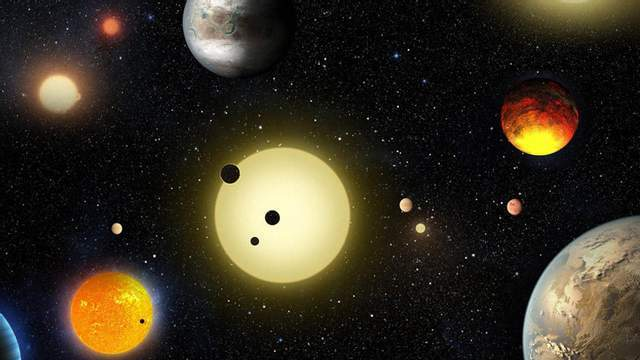

Цікаве про космос

🌌 1. Ми дивимося в минуле
Коли ми дивимося на зорі, то бачимо світло, яке подорожувало до нас роками, десятками, сотнями або навіть тисячами років. Можливо, деяких зір, які ми бачимо сьогодні, вже давно не існує.
🌍 2. Земля — лише крихітна частинка Всесвіту
Наша планета здається величезною, але на тлі Сонячної системи вона зовсім маленька, а Сонячна система — лише крихітна частина галактики Чумацький Шлях.
👽 3. Чи самотні ми у Всесвіті?
У космосі існують мільярди галактик і незліченна кількість зір. Навколо багатьох з них можуть обертатися планети. Тому виникає питання: чи може десь існувати життя, про яке ми ще не знаємо?
🪐 4. У космосі немає звичного поняття «верху» і «низу»
У відкритому космосі немає єдиного напрямку, який можна назвати верхом або низом. Це залежить від того, як розташована людина відносно інших об'єктів.
☀️ 5. Сонце теж не вічне
Сонце колись змінить свій стан і завершить основний етап свого існування. Але це станеться приблизно через 5 мільярдів років.
🌑 6. Космос приховує більше, ніж ми знаємо
Людство дослідило лише невелику частину Всесвіту. Ми досі не знаємо точної природи темної матерії та темної енергії, які становлять більшу частину його вмісту.
✨ 7. Ми буквально складаємося із зоряного пилу
Багато хімічних елементів, з яких складається людське тіло, утворилися всередині зір або під час потужних космічних вибухів. Тобто частина речовини, з якої складаємося ми, має зоряне походження.